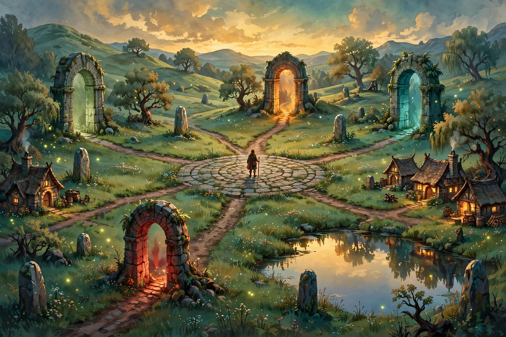

A small world with nothing important to do. No quests, no timers, no score worth chasing — just paths, a pond, some standing stones with things to teach, and four portals.
Step through a portal and you arrive at a workshop — each one its own little room, its own page. Step back through and you're in the Hub again, right where you left it. Wander as long as you like. Leave whenever you like. The Hub keeps.
Or skip the walk and step straight through:
The Hub is built in pieces. Each module loads into the world on its own — switch one on and the meadow changes around you; switch it off and it unloads cleanly. Nothing else about the Hub has to change.
Four portals, one pond, and every path worn by whoever walked it before you.
Ten stones stand in the meadow, each carrying a short lesson. Reading them is not a quest and there is no prize for all ten — this list just remembers what you've read, for this visit.
A standing stone
There is no wrong way to do this.
Walk with W A S D or the arrow keys, click or tap a spot to walk to it, or use the on-screen pad on a phone.
Portals are the tall stone arches with colored light. Walk up to one and press E (or tap the prompt) to step through to its workshop. Every workshop has a portal back.
Standing stones are the gray stones scattered off the paths. Press E beside one to read what it carries.
Modules load extra life into the meadow — fireflies, rain, nightfall, critters. Open the Modules shelf from the top of the screen and switch them on or off whenever you like.
There is no ending. When you're done, just close the page — the Hub will be here, mid-dusk, whenever you come back.
Through the Amber Portal. Everything here repeats — that's the point. Once you see the repetition, you can see what's coming, and what would break it.
A pattern is a promise the world makes: this happened, then this, then this — and it will keep happening. A bouncing ball telegraphs its next bounce. A shuffled deck telegraphs nothing, but the cards already on the table narrow what can possibly come next. Reading patterns isn't fortune-telling; it's noticing which promises are being kept.
The trick this room teaches is the oldest one there is: watch the sequence, find the rule, test the rule against the next step. If the next step breaks it, you didn't fail — you learned where the real rule lives.
The simplest pattern is a thing that happens again. A heartbeat, a season, a chorus. Repetition is how the world says "you can count on this much."
Red, black, red, black. High, low, high, low. Alternation is repetition with a partner — and most interesting patterns are two or three simple ones braided together.
The most informative moment in any pattern is where it breaks. The odd card, the missed beat. Breaks are where new information lives.
Each sequence below follows a rule. Read what's shown, decide what belongs in the empty slot, and tap your answer. Wrong answers cost nothing — they just show you a different rule than the one running.
Press “New sequence” when you're ready.
Through the Teal Portal. Benches, offcuts, and half-finished things. Nobody here has ever thrown a project away for being strange.
Almost nothing gets made by knowing the whole plan in advance. You pick up two things, hold them together, and see what they want to become. Then you correct — by halves, not in one leap. Head the general direction of the thing, notice what looks right and what doesn't, adjust, and repeat. The finished object is just the place where the corrections got small enough to stop.
That's not a compromise. That's the method — the same one behind every good repair, every working script, every recipe that ever got better in somebody's kitchen.
Constraints are not the enemy of making; they're the shape of it. Three materials on a bench will suggest things a warehouse never would.
Most combinations do nothing. A few do something surprising. You can't know which are which from the shelf — you have to hold them together.
Don't try to land exactly right in one move. Get closer, look again, get closer. Halving the distance, again and again, arrives.
Pick any two or three materials and see what they become together. Some combinations are old friends. Some are nonsense. Both are information.
The bench is empty. Pick something up.
Through the Sage Portal. A quiet room full of beginnings. Every story here is unfinished on purpose — finishing is the visitor's job, or nobody's.
Underneath every tale is a small, countable mechanism: a character, a place, a change. Lay a story over that mechanism and suddenly the mechanism can carry meaning — the same way a deck of cards is just printed pasteboard until the layout on the table starts to mean something. The mythology is the interface. The reading is the technology.
That's why stories are such good memory tools. A list of facts is heavy. The same facts hung on a character walking through a door are light — the mind holds the journey as one chunk and unpacks the facts as it goes.
One image can carry a paragraph. A tower falling, a door left open, a light in a window — symbols are how stories pack more meaning than they have room to say.
The same events in a different order are a different story. What sits beside what, what comes first, what's missing — the layout does half the talking.
An unfinished story isn't a broken one. It stays open, and open things invite the next person in. Some stories are doors, not destinations.
Tap three stones. Each one adds a piece, and the pieces assemble themselves into the start of a tale. Tap again for a different beginning — there are more beginnings here than anyone will ever use.
Three stones are waiting to be turned over.
Through the Rust Portal. The only workshop where the work is stopping. Sit a while. The benches here are for one thing: not being in a hurry.
There's an old rule, learned the hard way by a lot of people who fix things: if you force yourself to slow down and think for a few minutes, you solve a lot more than rushing through it all. The fast version of a person also finishes things — the skill isn't being slow, it's discernment: knowing when fast is wrong, and downshifting on purpose.
Some people sweep a porch to think. Some walk a path they've walked a hundred times. The motion doesn't matter. What matters is giving the pattern time to surface on its own — it usually does, right about when you stop chasing it.
You can't notice everything. Wandering slowly through a small world teaches the eye what rushing past a big one never will: most of what's interesting is quiet.
Nothing in the Hub needs you. That's deliberate. A system that only works while you push it isn't finished — rest is part of the design, for worlds and for people.
In the old multi-user worlds, anything that happened that wasn't yours arrived marked with three asterisks. Listening is mostly that: noticing the *** events — the world, going on, kindly, without you.
Follow the circle. In as it grows, hold, out as it shrinks. Four counts in, four held, six out. Stop whenever you like — the bench keeps no record but this visit's breaths.
Breaths this visit: 0